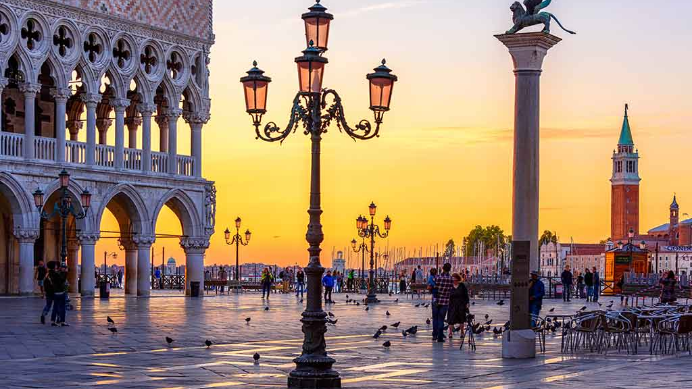
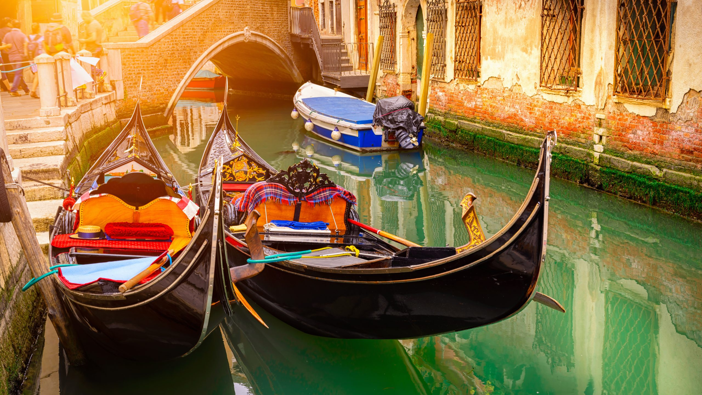
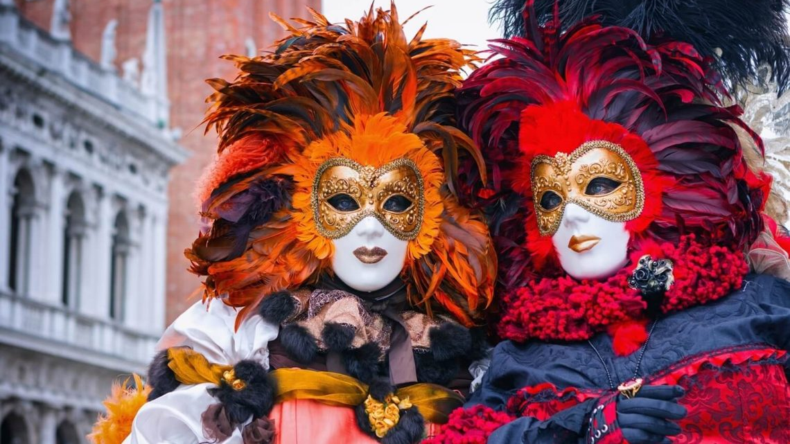

Wenecja to teatr życia


Wenecja to obietnica spotkania z przeszłością, gdzie każdy może stać się częścią spektaklu. Jest w niej siła, która przyciąga i pozwala na chwilę zapomnienia. To nie tylko miejsce to stan ducha, gdzie każdy krok to część niekończącej się opowieści. W Wencji nie słychac silników, słychać tylko szum fal odbijających się o łodzie. Jej labirynt kanałów i wąskich uliczek jest żywym muzeum. Jest to miasto magiczne, które przyciąga dusze swoim śpiewem.
Piazza San Marco

To główne, historczyne serce Wenecji, otoczone najważniejszymi zabytkami, takimi jak Bazylika, Pałac Dodżów i kampanila. Ten otwarty, tętniący życiem plac nazywany jest "salonem Europy", łączy się z Canale di San Marco poprzez mniejszą Piazzettę. Miejsce pełne turystów, kawiarni (słynna Caffe Florian) i orkiestr, szczególnie malownicze miejsce. Plac jest narażony na wysokie wody kiedy z laguny woda zalewa jego powierzchnię. To cały urok Wenecji.
Rejsy gondolą
Rejs gondolą w Wenecji to ikoniczna, choć kosztowna atrakcja ok. 110 euro za 30 minut. Do jednej łodzi może wejść do 5 osób. Najlepiej unikać zatłoczonych miejsc i szukać bocznych kanałów. Rezerwacja nie jest konieczna, gondole są dostępne na wielu przystaniach. Wieczorny rejs jest droższy, ale oferuje najbardziej romantyczną atomosferę.

Bazylika św. Marka
Bazylika ta to arcydzieło sztuki bizantyjskiej. Jej złote mozaiki, świecące blaskiem na sufitach i ścianach opowiadają historię wiary, które przetrwały próbę czasu. Zbudowana została aby przechowywać relikwie patrona miasta, jest ona wyrazem bogactwa i potęgi weneckiej. Pod kopułami kryją się skarby sztuki i religii, które poruszają wierzących oraz miłośników historii miasta, które zawsze łączyło wschód z zachodem.
Weneckie maski
Popularne maski, które można nabyć w sklepach z pamiątkami, to maski teatralne wywodzące się głównie z pantonimy ulicznej. To rodzaj komedii zaczerpniętej ze sztuk antycznych. Popularne weneckie maski to: Colombina - bogato zdobiona złotem, Arlecchino - czarna maska niewolnicza, pantalone - maska komiczna podobna do Papkina, Dottore - maska medyka.

Most Rialto
To kamienny most, na drewnianych palach, ukończony w XVI wieku, został zbudowany w celu zastąpienia drewnianego mostu i wcześniejszego mostu pontonowego, który kiedyś był jedynym łącznikiem między dwoma brzegami Wielkiego Kanału. Most ma długość 48 metrów i szerokość 22 metrów. Jest to jeden z najbardziej rozpoznawalnych symboli Wenecji.